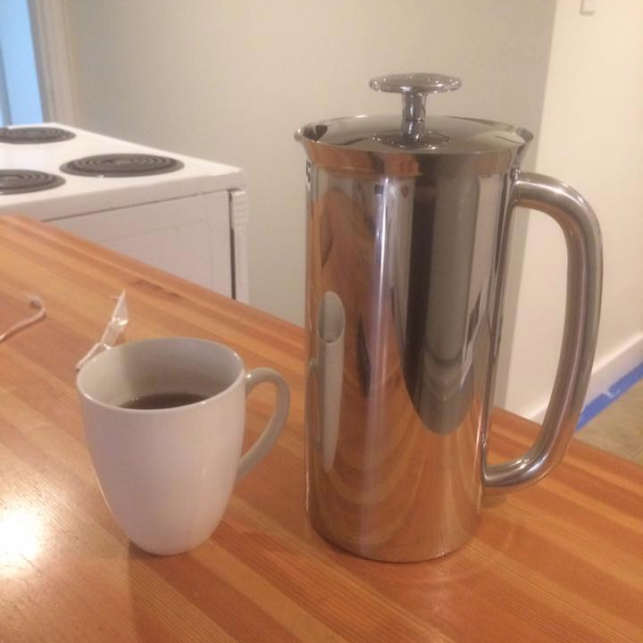

Exterior painting companies in Vernon, who is the best?

Try Color Logic painting services!
Here's how to hire an exterior house painter in the Okanagan:
- Get a referral. Ask your friends and family which painter they've hired in the past, and what their experience was.
- Call around! It's a good idea to get 3 different quotes before starting your painting project. You can call Dave first at 250-306-9121.
- Ask for an estimate. Clearly define your project: "we'd like the exterior of our house painted. It has wood siding." Ask the painter to come to your home, and provide an estimate. It's a good idea for you to be present during the assessment, so you can ask questions.
- Ask for references. Before you hire a painter, ask them for references. Call those people! You want to make sure that your painter is experienced.
- Clearly communicate expectations. You should have an agreement with the painter you hire that answers these questions: when will they start? When will the project be complete? What hours will they work? What is the total cost? What type (and color) of paint will they use?
★★★★★ "Best local painter I've used."
Whether it's interior or exterior, we can give it a high quality paint finish!
About Color Logic
Dave Thomas is a Vernon local, with over 10 years professional painting experience.
When he's not painting, he's drinking coffee and doing vehicle restorations.
Email: daverobertthomas@gmail.com
Instagram: @colorlogicpainting